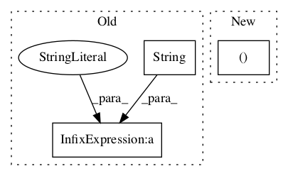

e7bfb58ab7795bca341cbd0a763f6ec200f6315e,deepctr/models/din.py,,get_input,#Any#Any#Any#,21

Before Change
def get_input(feature_dim_dict, seq_feature_list, seq_max_len):
sparse_input = {feat.name: Input(shape=(1,), name="sparse_" + str(i) + "-" + feat.name) for i, feat in
enumerate(feature_dim_dict["sparse"])}
user_behavior_input = {feat: Input(shape=(seq_max_len,), name="seq_" + str(i) + "-" + feat) for i, feat in
After Change
def get_input(feature_dim_dict, seq_feature_list, seq_max_len):
sparse_input,dense_input = create_singlefeat_dict(feature_dim_dict)
user_behavior_input = OrderedDict()
for i,feat in enumerate(seq_feature_list):
user_behavior_input[feat] = Input(shape=(seq_max_len,), name="seq_" + str(i) + "-" + feat)
In pattern: SUPERPATTERN
Frequency: 3
Non-data size: 3
Instances
Project Name: shenweichen/DeepCTR
Commit Name: e7bfb58ab7795bca341cbd0a763f6ec200f6315e
Time:
Author: null
File Name: deepctr/models/din.py
Class Name:
Method Name: get_input
Project Name: astorfi/TensorFlow-World
Commit Name: 76a779010932581c6407810305271d98f0ef25ea
Time:
Author: null
File Name: codes/3-neural_networks/multi-layer-perceptron/code/train_mlp.py
Class Name:
Method Name:
Project Name: shubhomoydas/ad_examples
Commit Name: 0c816cbbc8b607d2edc64888bfd7bac329699953
Time:
Author: null
File Name: python/timeseries/timeseries_regression.py
Class Name:
Method Name: find_anomalies_with_regression